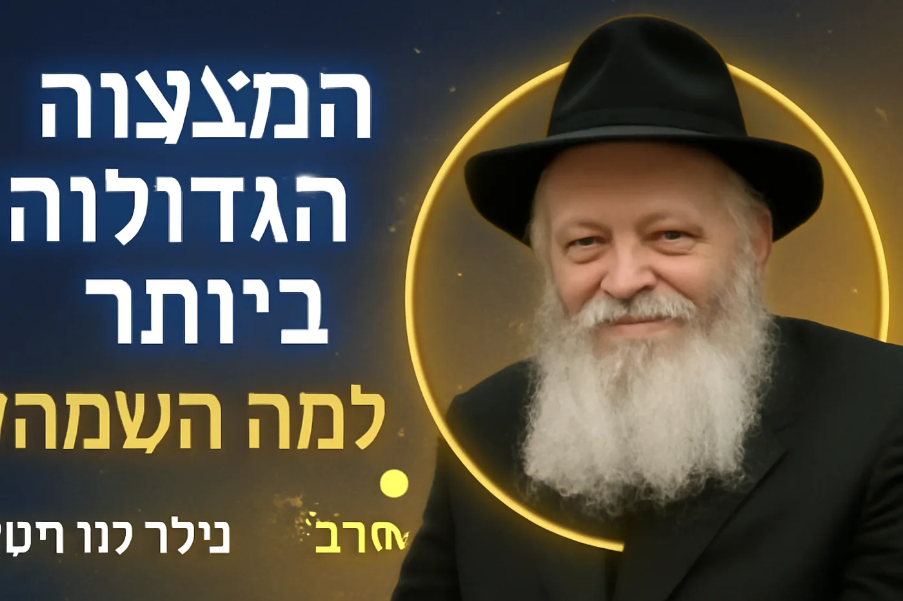

הסרטון מציג הסבר עמוק ומרגש של הרב יהודה טאוב על למה השמחה היא המצווה הגדולה ביותר. זהו שיעור יסודי שחושף את הקשר העמוק בין שמחת האדם לשמחת השכינה. הרב מביא מקורות חזקים מהרמב"ם והרבינו יונה ומסביר שהקדוש ברוך הוא "אוהב שהבנים שלו שמחים".מסרים עיקריים:
- השמחה היא לא רק מצווה - היא המצווה הגדולה ביותר
- שמחה מביאה לקיום מצוות בצורה מושלמת
- הקדוש ברוך הוא רוצה יהודים שמחים כי הוא "טוב מאוד מאוד"
- הקשר הישיר: שמחת האדם = שמחת השכינה
מאמר קצר
"למה השמחה היא המצווה הגדולה ביותר? הגילוי שישנה לכם את התפיסה"
רוב האנשים חושבים על השמחה כעל "תוספת נחמדה" למצוות. משהו שטוב שיש, אבל לא הכרחי. הרב יהודה טאוב חושף מציאות מפתיעה לחלוטין.לפי הרמב"ם והרבינו יונה, השמחה היא לא רק מצווה נוספת - היא המצווה הגדולה ביותר שיש! למה? כי שמחה מביאה אדם לעשות את כל המצוות בצורה מושלמת.החידוש המדהים: אפילו אדם שפשוט שמח (לא דווקא במצוות), אם השמחה שלו מביאה אותו לעבודת השם - זו "מצווה ענקית" שהוא עושה.אבל הסיבה העמוקה ביותר נסתרת בטבעו של הקדוש ברוך הוא עצמו. הרב מסביר: השם הוא "טוב מאוד מאוד מאוד" מכפי שאנחנו מבינים. והוא רוצה מאוד שיהודים יהיו שמחים - כמו אבא שרוצה שהילדים שלו יהיו שמחים.הקשר המיוחד: כשאנחנו שמחים, השכינה שמחה. כשאנחנו מצטערים, השכינה מצטערת. זה אומר שכל רגע של שמחה שלנו הוא לא רק מצווה אישית - אלא תרומה לשמחת השכינה עצמה!לצפייה בהסבר המלא: 🔗 ערוץ הרב יהודה טאוב: https://www.youtube.com/channel/UCtW9paDQ9Gq6aVmAfuu8Onw
ציטוטים מהשיעור
1. 💫 מרגש עד דמעות:
"הקדוש ברוך הוא אוהב שהבנים שלו שמחים" - רב יהודה טאוב
2. 🎯 מהפכני:
"השמחה היא המצווה הגדולה ביותר שיכול להיות" - רב יהודה טאוב
3. 💪 מעצים:
"עבודת השמחה - זו המצווה הכי גדולה שאדם יכול לעבוד עליה" - רב יהודה טאוב
4. 🔥 עמוק:
"השכינה שמחה כשאנחנו שמחים - השכינה מצטערת כשאנחנו מצטערים"
5. ⚡ יסודי:
"הקדוש ברוך הוא טוב מאוד מאוד מאוד - אנחנו לא מבינים עד כמה הוא טוב" - רב יהודה טאוב